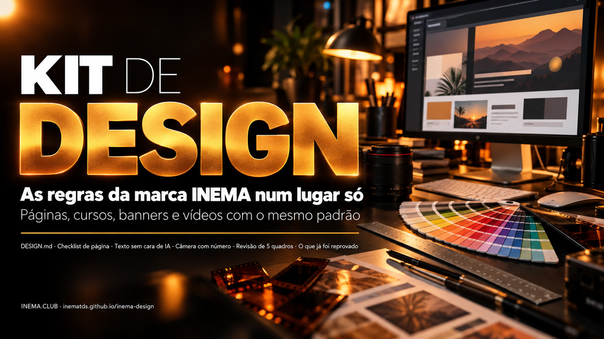

As regras da marca num lugar só
Uma pasta que o agente lê antes de criar qualquer peça. Cores, fontes, texto, câmera e tudo o que já foi reprovado, com a fonte de cada regra.

O INEMA Design é uma pasta de arquivos de texto com as regras visuais do ecossistema INEMA: cores, fontes, jeito de escrever, câmera de vídeo e a lista do que o Nei já reprovou. Serve para quem cria páginas, guias, cursos, banners, explicavideos, shorts e reels com agentes como Claude Code e Codex. O agente lê a pasta antes de começar e a peça sai no padrão da marca, sem repetir erro antigo. Para usar, basta copiar a pasta e pedir ao agente que leia o CLAUDE.md dela primeiro.
Um "design-os" adaptado ao INEMA
O método vem do Claude Design Blueprint: uma pasta de design que o agente lê antes de todo projeto. Aqui ela foi preenchida com as regras que já estavam espalhadas em skills, lições e memórias.
🎨 Uma marca, várias linhas
O DESIGN.md tem um núcleo comum e uma seção por tipo de peça: guia dark âmbar, curso v2, v5 e v6, banner, thumb e vídeo. Cada cor tem a origem anotada.
🎬 Vídeo com nota
Padrão de 16:9 e 9:16, palavras de câmera com número e revisão de 5 quadros (0, 25, 50, 75 e 100%) com nota de 0 a 10 em visual, ritmo e marca.
🧾 Memória de correções
Tudo o que o Nei já reprovou fica numa lista só. Quando ele corrige algo novo, vira uma linha ali e o erro não volta.
O agente lê, produz e confere
A ordem de leitura está no CLAUDE.md da pasta. Conflitos entre regras não são resolvidos pelo agente: vão para o DECISOES.md e o dono escolhe.
Páginas
regras/pagina-20.md (20 pontos antes de publicar) e checks/preship.py, que confere o HTML.
Texto
regras/texto.md: aberturas proibidas, palavras que soam como IA, ano por extenso na fala.
Vídeo
video/style.md, video/camera.md e video/revisao-5-quadros.md.
Pouca coisa
Os arquivos são texto. Só os dois scripts de conferência precisam de ferramenta instalada.
Um agente
Claude Code, Codex ou outro que leia arquivos da pasta.
git clone https://github.com/inematds/inema-designPython 3
Para o preship.py. Sem instalar nada além do Python.
python3 --versionffmpeg
Para tirar os 5 quadros de um vídeo pronto.
ffmpeg -versionDo clone à peça conferida
Os comandos abaixo são os que estão no repositório.
Copie a pasta
Deixe a pasta onde o agente consegue ler, por exemplo em ~/projetos/inema-design.
git clone https://github.com/inematds/inema-design ~/projetos/inema-design
Peça ao agente que leia primeiro
Antes de qualquer peça visual, a primeira instrução é a leitura do kit. O agente diz em até seis linhas o que leu e quais regras valem.
"Leia ~/projetos/inema-design/CLAUDE.md e siga a ordem de leitura. Depois crie o guia do projeto X."
Confira a página antes de publicar
O script testa parte dos 20 pontos (h1, main, viewport, título, descrição, imagem de compartilhamento, favicon, tamanho das imagens, rótulos). O resto se confere pela lista.
python3 checks/preship.py guia/index.html # PASS/FAIL por item e o total
Revise o vídeo em 5 quadros
Tire os quadros, monte uma folha e dê nota de 0 a 10 em visual, ritmo e marca. Nota abaixo de 8 volta para correção. Se refazer custar crédito, pergunte antes.
V=video.mp4; D=$(ffprobe -v error -show_entries format=duration -of csv=p=0 "$V") for p in 0 25 50 75 100; do t=$(python3 -c "print(min($D*$p/100, $D-0.05))") ffmpeg -v error -y -ss "$t" -i "$V" -frames:v 1 "quadro-$p.jpg" done
Registre cada correção
Quando o dono reprovar algo, acrescente uma linha com data em memoria/correcoes.md. Na próxima peça o agente já lê essa regra.
- 10/10 — Zoom 1,4–1,9 cortando texto: reprovado. Dissolve, imagem inteira, zoom ≤ 1,25.
Testado em peças reais
As duas conferências foram rodadas em material já publicado.

PASS 18 html has a lang attribute PASS 18 exactly one h1 FAIL 18 main landmark present PASS 3 viewport meta present FAIL 20 og:image is set FAIL 20 theme-color is set FAIL 20 favicon link is set FAIL 16 every img has width and height 8/13 pass
O que o dono escolheu
Revisão feita uma por uma entre 10 e 12/10/2026. Páginas e vídeos já publicados ficam como estavam; o valor antigo de cada item está no HISTORICO.md.
| Tema | Ficou assim |
|---|---|
| Cor da marca | Amarelo #FACC15 em página, curso e vídeo (antes âmbar #E2A23B no guia) |
| Fundo escuro | Preto #0c0c10 em toda página nova |
| Fundo claro | Amarelo só como preenchimento: botão, marca-texto e caixa; a letra fica escura e o link é #854d0e |
| Título | Sora; corpo em Inter |
| Emoji | Só como ícone pequeno no guia e no curso v2; nada nos cursos v5 e v6 |
| Ícones | Traço fino de linha, tipo Lucide |
| Banner | Letras contidas, cena quente; azul só no estilo opus, quando pedido |
| Thumb | Pode usar fonte condensada; o banner não |
| Reel e short | Troca de imagem a cada 1,5–3 s e voz do Nei por padrão |
| Zoom | Até 1,25× em imagem com texto; até 1,4× em foto no reel |
| Presets de vídeo | Os cinco continuam livres; as regras que vieram de reprovação valem para todos |
Três etapas
A primeira cria os arquivos. As outras ligam o kit às ferramentas que produzem as peças.